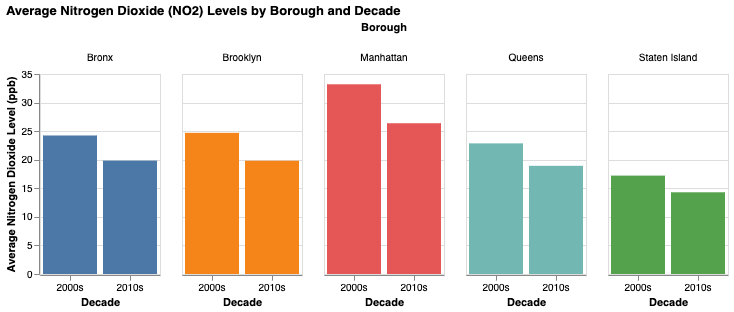
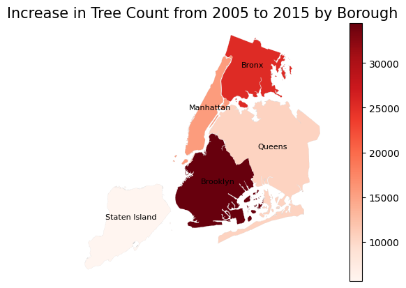
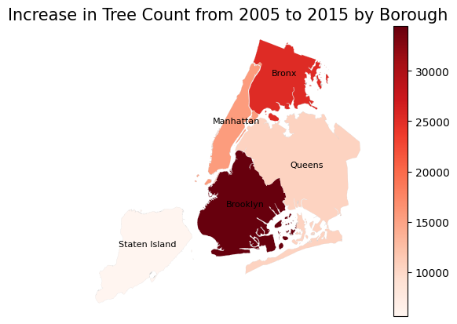

Analyzing a Relationship Between NYC’s Tree Census and Air Quality
Research Question
Is increasing the number of trees in New York City positively correlated with better air quality?
Approach
General Approach
For our analysis, we first gathered data on air quality in New York City, covering the period from 2005 to 2015. This dataset provided insights into the levels of various pollutants in the city over a ten-year span, which served as a key component in understanding environmental trends and their potential correlation with other variables. In addition to the air quality data, we also collected tree census data for New York City. Specifically, we obtained census data for the years 2005, which corresponds to the 2000s decade, and 2015, which corresponds to the 2010s decade.
To support spatial analysis, we first attempted to use Neighborhood Tabulation Areas (NTAs) to see if we could find a correlation at a more granular level than boroughs. However, the air quality data used different defined areas than the tree census, and we encountered difficulties when attempting to tie the data sets together. We then switched to using shapefiles for the boroughs of New York City. These shapefiles define the geographical boundaries of each borough, which enabled us to perform geographic visualizations and analyses, such as mapping air quality levels and tree distribution across the city’s five boroughs. These shapefiles were essential for linking the environmental data to specific locations within the city.
We also wanted to make the data dynamic and interactive for users. We designed an application that allows users to explore the changes in tree quantity over time. Because we first tried to use NTAs, the app has a tab in which users can see the number of trees gained or lost between 2005 and 2015 per NTA. We then added a second tab which showcases our analysis by borough. By providing the ability to adjust the decade and borough selection, the application enables users to analyze how tree density has evolved between the 2000s and 2010s in New York City.
Difficulties & Limitations Encountered
In regard to our air quality data, we were unfortunately unable to recover readable data for the years 2005-2007. For the year 2005, the data was inconsistently measured and contained some unique and unnecessary calculations. The dataset did not contain any information for the years 2006-2007. Thus, we were limited to use the data from 2008-2009 to gather air quality data for the 2000s. We used the nitrogen dioxide levels that were calculated in the air, with a lower quantity indicating better air quality. We also encountered difficulties using the NTAs from the tree census data to connect to air quality, as detailed above, which led to us conducting our analysis by borough. While this is still helpful, it is not as granular an analysis as one conducted by neighborhood.
Static Plots
Our first static plot shows the difference in air quality from the 2000s to the 2010s:

By producing separate bar plots for each borough, we can collect a few pieces of valuable information. First, all the boroughs saw a decrease in nitrogen dioxide! This is good news. It means that, over time, the estimated air quality is increasing in New York City. Second, Manhattan is, in both decades, the highest in Nitrogen Dioxide particles per billion. Manhattan is an incredibly dense borough, meaning the traffic density and large buildings that expel fumes may contribute to its lower air quality relative to the other four boroughs.
In our first analysis using NTAs, we produced a plot showing the difference in tree count from 2005 to 2015 by neighborhood:

The plot above shows neighborhoods that lost trees in shades of red, and the neighborhoods that gained trees in shades of green. This was a basis for the idea behind our dynamic app. When we switched to an analysis at the borough-level, we decided it would be helpful to put our air quality data onto a map of New York City to analyze relative percentage changes in Nitrogen Dioxide. Here is that plot, along with a static plot showing the increase in number of trees by borough from 2005 to 2015.
 

As you can see, the tree count in Brooklyn and the Bronx increased the most, followed by Manhattan, then Queens, and lastly Staten Island. Air quality in each borough also improved over time, with the most significant improvement in Manhattan, followed by Brooklyn, the Bronx, Queens, and Staten Island. This shows that, while Manhattan had the highest levels of Nitrogen Dioxide in both decades, it also experienced the steepest decrease in pollution levels, and a significant increase in the number of trees. Outside of Manhattan, the correlation between trees gained and reductions in Nitrogen Dioxide is in line with expectations. Overall, the range of percentage decreases in Nitrogen Dioxide showed low variance, which is encouraging. Rather than concentrated or erratic changes that might raise questions about the data, we can see that New York City is experiencing more consistent, citywide improvements.
Dynamic Shiny App
Our dynamic app provides an interactive platform for exploring changes in urban greenery across New York City. Users can dynamically select specific neighborhood areas to analyze how the number of trees has shifted between the 2000s and the 2010s. The app uses a map of New York City to highlight which neighborhood the user has selected, and hovering over it shows the difference in number of trees from decade to decade. If the area lost trees, it appears in red, and if it gained trees, it appears in green. App users can also analyze tree quantity changes at the borough level by switching to the “Borough” tab and selecting one of the five.
Future Work
- Our data shows an increase in the number of trees along with air quality improvement. New York City should look at investing in higher forestation – what is the cost of this?
- Air quality is not solely dependent on tree density levels, so what other factors can we address to increase air quality in New York City? Who should that responsibility fall to? If we had data on other factors, we would be able to attempt to establish a causal relationship through regression instead of just an association.